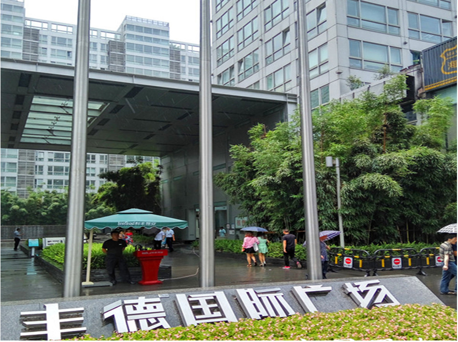

成都青年房产有限责任公司是丰德集团全资子公司，其历史可追溯至1988年，是成都市当时最早设立的18家专业房地产开发公司之一。
青年房产作为一家具有高度社会责任感和企业道德的资深房地产开发企业，始终坚持“品质、信赖、关爱”的经营理念和“用心专筑”的发展宗旨。
青年房产专注于中高档住宅产品及高品质写字楼物业的开发，以对不同领域专业的市场研究和目标市场定位，通过持续不断地改进产品、改善服务，创造出满足目标客户需求的产品和生活方式。
2006年9月落成并交付使用，位于航空路6号
项目占地约36亩，总建筑面积约12万平方米
项目由5栋15—16层办公物业和部份底层商业组成
荣获“首届中国西部十佳最具投资价值商业地产”
荣获“首届中国西部十佳写字楼”
荣获“2005成都楼市年度金牌写字楼”
项目紧邻丰德国际广场，位于新希望路7号， 由服务式公寓、写字楼、商业三部分组成，项目占地约16亩，总建筑面积约8万平方米，引入 国际知名服务式公寓管理公司OAKWOOD进驻，并命名为成都丰德奥克伍德华庭公寓，2011年5月投入运营。
项目地处金沙片区，位于蜀金路1号，由3栋22—24层办公物业组成， 项目总占地面积约24亩，总建筑面积约15万平米，项目吸引了中国大 唐电力集团、渤海银行、中国银行、华力创通、浙江昆仑建设集团、 宏源证券、华泰证券等大批品牌企业进驻。
荣获“金沙-三大金牌商务地标写字楼”
荣获“2009成都房地产最具投资价值商用物业”
荣获“2009成都市商业地产销售三强楼盘”
项目位于蜀西环街66号，为单栋20层商业办公楼， 总建筑面积约5万平方米，项目于2011年5月开工建设， 2013年7月全面交付使用。
项目目前正在修建中，位于成都市青羊区鼓楼南街99号, 是成都市重点项目及青羊区重点项目，地处成都市中心CBD区域, 占地面积约18亩，总建筑面积约18万平方米, 建筑高达210米，是该区域未来地标型建筑